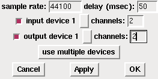
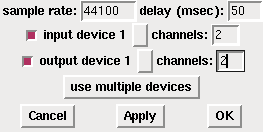
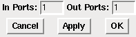
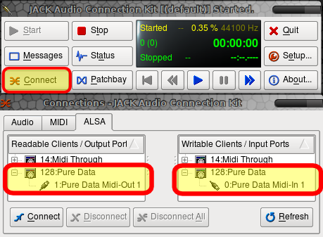

Troubleshooting
There are many small things that might not work straight away. Here are some of the most common issues you might come across.
I don't hear any sound!
First make sure that the box marked "compute audio" is checked in the main Pd window. Then check to see that you have selected the right soundcard and drivers for your system, and that the soundcard is connected and operating. On OS X, make sure the check-boxes next to your selected soundcard have been checked in "Audio Settings". On Linux or OS X with Jack, make sure the Jack application is running. On all platforms, check the audio control panel which comes with your Operating System and make sure the proper output is enabled there, and that its playback volume is turned up. Also make sure you are using the correct sampling rate in Pd to match that of your soundcard.
 

Left: the "compute audio" button in the main Pd window. Right: the "Audio Settings" dialog.
There are clicks, glitches or crackles in the test tone!
More than likely you have chosen a latency that is too fast for your computer and soundcard to handle. Return to the "Audio Settings" menu and increase the "delay" time there. On Linux, it is also possible that other processes running on your computer, or even a badly configured or slow graphics card, can affect the performance of Pd. Consider running Pd with the "-rt" flag enabled (Linux only!). This can be done from the command line, or by adding "-rt" to the "startup flags" under the "Startup" menu. On Linux or OS X with Jack, it is possible to set the latency of the Jack application to a greater amount and reduce glitches (called "xruns" in Jack) there as well.
The test tone sounds distorted!
It is possible that you are playing the sound too loud for your soundcard. Using the controls of your soundcard to reduce the playback volume. Also make sure you are using the correct sampling rate in Pd to match that of your soundcard.
I'm not seeing any audio input!
Perhaps you did not enable sound input. On OS X, make sure the check-boxes next to your selected soundcard have been checked in "Audio Settings". Also, some cards with an uneven number of in and out channels can have problems in Pd. Try setting the number of channels the same for the input and output. On all platforms, check the audio control panel which comes with your Operating System and make sure the proper input is enabled there, and that it's recording volume is turned up.

The QJackCTL application on Linux allows easy routing of audio signals between applications and the soundcard, or between applications on the same computer.
I don't see any MIDI input!
Check to see that your MIDI devices or programs are actually sending data, and that your Operating System is correctly sending this data to Pd. On OS X, check to see that you have selected the proper MIDI devices, and that the "Audio MIDI Setup.app" was running before you started Pd. On Linux using the default MIDI drivers, check to see that you selected the proper MIDI device at startup. On Linux with the ALSA-MIDI drivers, make sure you have properly connected your MIDI devices or MIDI programs to Pd. Using Jack with the "QJackctl" application is recommended for this purpose. On Windows, consider using an application like MIDI Ox/MIDI Yoke Junction to see, analyze and manage your MIDI connections.

The "MIDI Settings" dialog.

It is necessary to have the "Audio MIDI Setup" application on OSX running in to connect MIDI hardware and software ports to Pure Data.

QJackCTL also allows Linux users to route ALSA MIDI between applications and hardware MIDI ports.
I get the message "... couldn't create" when I type an object's name and there's a dashed line around my object!
The reason for this error is that you have asked Pd to create an object which does not exist. There can be several reasons for this error, and the most common one is spelling. Object names in Pd must be spelled correctly, and they are case sensitive. [Osc~] or [OSC~] will not create in place of [osc~], for example, nor will [osc] without the tilde. Sometimes users accidentally combine the creation argument and the object name, such as [+1] instead of [+ 1]. A creation argument is additional information given to an object and sets the parameters for it.
New Pd users also often get confused between Objects and Messages, which are very different types of elements that can be placed in the patch from the "Put" Menu. You can use the "Find last error" function under the "Find" menu to track down which objects did not create. Please see the chapter called "The Interface" for more details.

I get the message "... couldn't create" when I open a patch and there's a dashed line around my object!
If you get this error when opening a patch which you're pretty sure works otherwise (i.e. you've downloaded it from the internet or you created it in a previous Pd session), then it's likely that there is an External Object which was available when the patch was created, but is not available now. You can use the "Find last error" function under the "Find" menu to track down which objects did not create. Pd will preserve the location and connections of an object which fails to create, but it will not function. While most of the Pd Externals are available in the Pd Extended distribution, some are not, or require additional configuration of the "Path" and "Startup" settings. Please see the relevant sections in the "Configuring Pd" chapter. If the External is not available in Pd Extended, you may need to install it yourself.
I get the message "error: signal outlet connect to nonsignal inlet (ignored)" when I open a patch.
This error tends to go with the previous error "I get the message '... couldn't create' when I open a patch...". Often this error means that an object has failed to create, usually because it uses an External Object which is not available in the current installation or configuration of Pd. Pd will preserve the location and connections of an object which fails to create, but it will not function. You can use the "Find last error" function under the "Find" menu to track down which objects caused errors. Pd will treat uncreated objects as Dataflow Objects even if they were originally Audio Objects, so this error will follow the previous one. Please see the relevant sections in the "Configuring Pd" chapter for information about setting the "Path" and "Startup" options. If the External is not available in Pd Extended, you may need to install it yourself.
I get the message "error: can't connect signal outlet to control inlet" and I cannot connect two objects together!
The output of Audio Objects (those with a tilde ~ in their name) normally cannot be connected to Dataflow Objects (those without a tilde ~ in their name). So Pd will not allow these connections to be made. You might want to look at your patch and make sure that you are using the proper combination of objects.
I get the message"error: DSP loop detected (some tilde objects not scheduled)" when I click "Audio ON", and the sound is not working!
In an analog electronic system, you can easily connect the output of a mixer back to one of the inputs, turn up the channel and get feedback. This is because everything in an analog system happens pretty much simultaneously. Computers do not work like this, however, and therefore you cannot ask a Pd patch to compute results based on it's own simultaneous output. Pd works in what are called Blocks (i.e. a group of samples, such as the default number of 64 samples), and all the Samples in each Block must be computed before they are output. So a DSP loop occurs when a patch needs information which is calculated inside the same Block in order to create output. You can use the "Find last error" function under the "Find" menu to track down which objects are causing the DSP loop. The easiest way around this problem is to create at least a one Block delay between the objects which are connected together. The objects [send~] and [receive~] are useful for this, because they have a built-in delay of one Block. To change the number of Samples computer in each Block, you can use the [block~] object.

I get the message "error: stack overflow" when I connect two Dataflow Objects together!
A "stack overflow" happens when you have asked Pd to compute a recursive operation, and this operation causes Pd to run out of memory. Often this is the first step before crashing Pd! A common example of a recursive operation which could cause this error is the classic counter, using [float] and [+ 1]. A [float] stores a floating point number on its right inlet, and outputs the result when it receives a bang. If the output of [float] is connected to the input of [+ 1], and the output of [+ 1] is connected to the right-most ("cold") inlet of [float], then a "bang" message sent to the left-most ("hot") [float] will output a number which increases by one every time that message is sent.
If, however, the output of [+ 1] is connected to the left-most ("hot") inlet of [float], then sending the message "bang" to the left inlet of [float] will have a different effect. It will ask [float] and [+ 1] to add numbers together as fast as the computer will let them do it. Because Pd will not stop and ask you "are you sure you want to do this?", this operation will quickly use up all the memory resources which Pd has, and cause a stack overflow. Please see the sections on "Hot and Cold" as well as on "Trigger" in the "Dataflow Tutorials" section for more information on how to avoid stack overflows.

I get the error message "connecting stream socket: Network is unreachable" when I start Pd!
If you are using the Linux operating system, and see this message when you start Pd, it means your machine cannot make a network connection to itself. You must configure your loopback network device. In many Linux distributions, you can do this by answering "yes" when the system configuration tools ask if the machine will be a "network" (even if it won't).